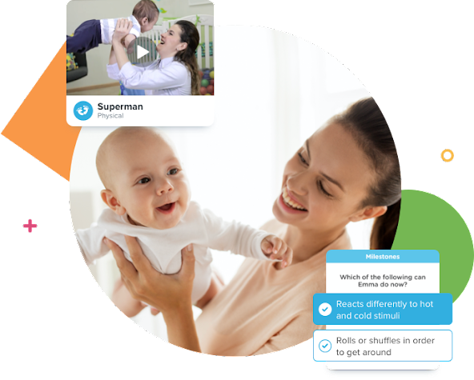
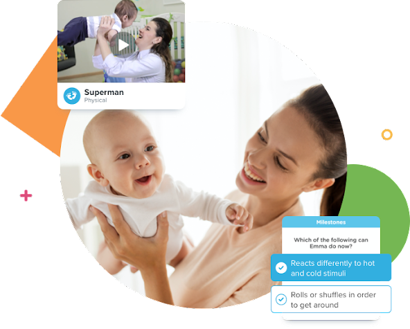
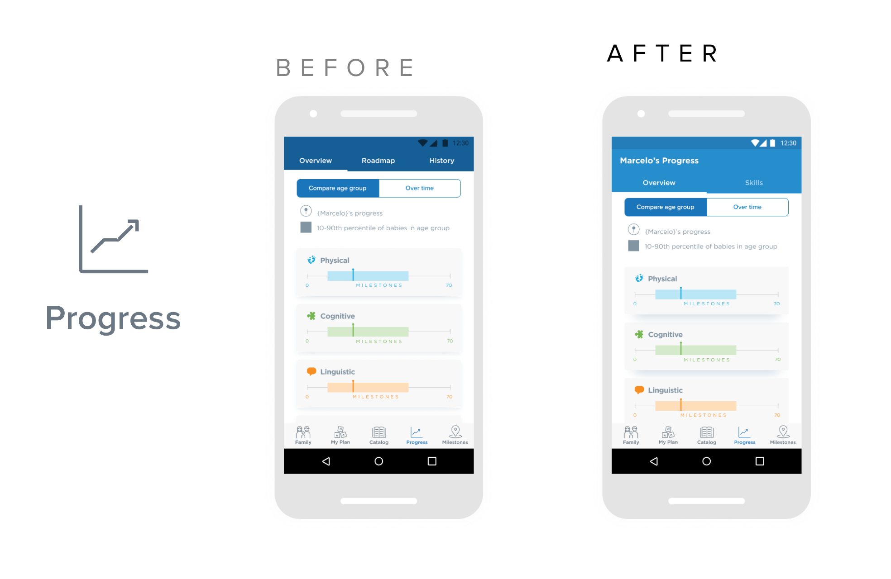
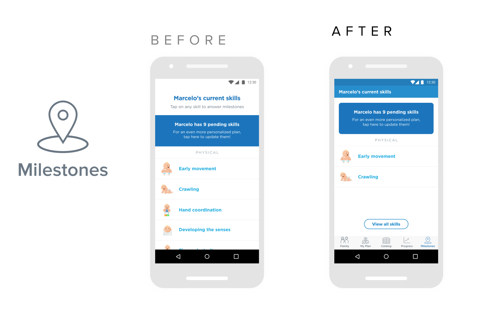
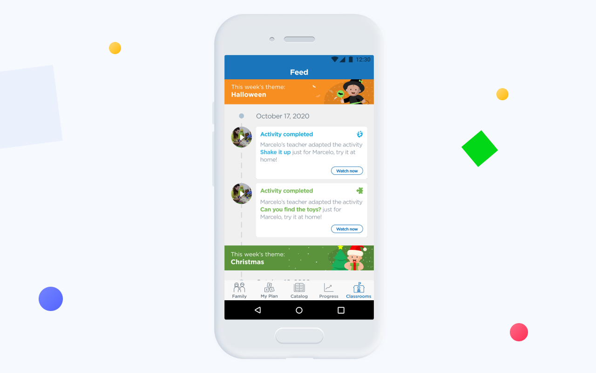

Kinedu App
The Kinedu platform, (web, iOS, Android) encourages and facilitates the early development of children during their first years through personalized activities.


Benchmark
User Research
UI Design
Redesign
Information Architecture
Mailing
Prototyping
Testing
Uniformity over main sections in Android.
Increased conversion rate in the profile section
and retention rate.
Decrease in design delivery time to the developer.
One of the main noticeable aspects in the Android app was the difference between the main sections of the platform. Many of the users noticed little harmony between screens. A standardization in elements was carried out through each section.


During 2019, the development of a new web platform created by Kinedu began, establishing a connection among people related to children's education: teachers and parents. In this section, parents receive and send files, messages and new advances from their children. This application was a challenge with a limited development time. We managed to deliver a product satisfactory and day by day we improve its use and image.

Since pregnancy, the mother's daily activities can influence the development of the baby. That is why we created a new functionality for the prenatal stage. In it, parents consult suggestions for daily physical activities, details about the approximate size and weight of your baby, information regarding what happens in the current week of pregnancy, related articles and the expected arrival date of the baby.